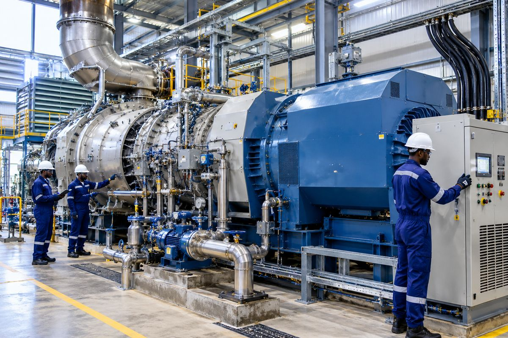

Home / Services
Services across the project lifecycle
Eight service areas, from engineering and construction support to start-up, maintenance and training.
Our services support projects across the engineering lifecycle, from planning and installation to testing, commissioning, maintenance and workforce development. Final scope is defined by the client's requirements, site conditions, contract and applicable regulations.
Engineering, Procurement & Construction (EPC) Services
We provide high-quality Engineering, Procurement and Construction services across industrial, commercial, oil and gas, energy and infrastructure sectors.
Discuss an EPC projectScope may include
- Engineering coordination and technical documentation
- Procurement coordination and material tracking
- Construction planning and site execution support
- Contractor and interface coordination
- Schedule, cost, quality and HSE coordination
- Inspection, completion and handover support
Installation, Pre-commissioning & Commissioning
We support the safe installation and systematic verification of mechanical and electrical systems before operational handover.
Plan installation or commissioning
Scope may include
- Site mobilisation and work-pack review
- Equipment installation and alignment support
- System walkdowns and mechanical completion checks
- Flushing and cleaning where applicable
- Electrical continuity and insulation tests as specified
- Loop checks and functional testing where included in scope
- Commissioning assistance and punch-list management
- Start-up and handover documentation
Gas Turbines, Gas Generators & Balance-of-Plant Systems
We provide installation and commissioning support for power-generation equipment and associated auxiliary systems, subject to equipment type, project scope and manufacturer requirements.
Discuss power-generation support
Scope may include
- Equipment positioning and installation coordination
- Auxiliary piping and utility connections
- Electrical and control interfaces
- Inspection and pre-start checks
- Commissioning support and performance-test coordination
- Completion records and handover
Mechanical Piping & Fabrication
We support mechanical piping work for industrial plants, energy facilities and oil and gas installations.
Discuss piping requirementsScope may include
- Piping fabrication and installation
- Supports and associated mechanical items
- Line checks and visual inspections
- Flushing and cleaning
- Hydro-testing and pressure testing under approved procedures
- Reinstatement and test packs
- Punch-list close-out and documentation
Welding, NDT and specialist services are offered only where qualified personnel and verified capacity are in place.
Electrical & Instrumentation
We support electrical installation and instrumentation activities for industrial and energy facilities.
Discuss electrical works
Scope may include
- Cable tray and cable laying
- Cable identification and termination
- Continuity and insulation-resistance tests as specified
- Panel and equipment connections
- Instrument installation support
- Loop checks, functional checks and test records
- Coordination with commissioning teams
Voltage levels, hazardous-area capability and certifications are confirmed per project scope.
Maintenance & Technical Services
We provide maintenance and technical support intended to improve asset reliability, support safe operation and reduce avoidable downtime.
Request maintenance support
Scope may include
- Planned and corrective maintenance support
- Equipment inspection and condition observations
- Troubleshooting assistance
- Mechanical and electrical checks
- Piping and auxiliary-system support
- Maintenance documentation
- Outage and shutdown support when resourced and contracted
- Recommendations for follow-up work
Start-up, Performance Testing & Handover
We support the transition from completed installation and commissioning activities to operational readiness and formal handover.
Plan start-up support
Scope may include
- Start-up planning and coordination
- Readiness reviews
- System-by-system completion checks
- Performance-test support according to approved criteria
- Punch-list tracking
- Operating and maintenance document collation
- Test reports, completion dossiers and handover records
Technical & Vocational Training
Our practical training programmes are designed to bridge academic knowledge and industry requirements, strengthening technical skills and work readiness.
Enquire about training
Scope may include
- Electrical installation and testing fundamentals
- Mechanical maintenance fundamentals
- Piping and valve awareness
- Basic instrumentation and loop-check principles
- Commissioning documentation
- Permit-to-work and hazard awareness
- Tool and equipment safety
- Technical reporting and job-readiness skills
Training is delivered where facilities and qualified trainers are available.
Planning an installation, commissioning, maintenance or technical training project?
Talk to Vertex Engineering Services Limited about your scope, schedule and technical requirements.